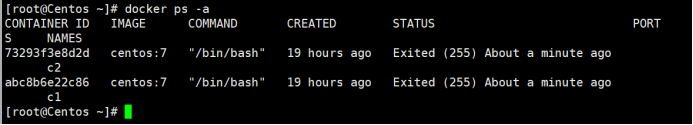
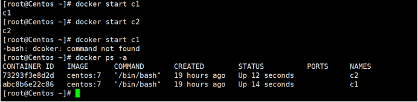
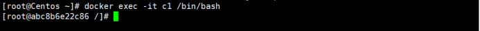
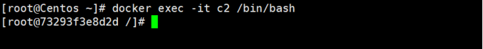
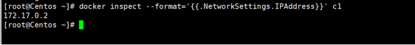

docker安装 #
# 1、yum 包更新到最新
yum update
# 2、安装需要的软件包， yum-util 提供yum-config-manager功能，另外两个是devicemapper驱动依赖的
yum install -y yum-utils device-mapper-persistent-data lvm2
# 3、 设置yum源
yum-config-manager --add-repo https://download.docker.com/linux/centos/docker-ce.repo
# 4、 安装docker，出现输入的界面都按 y
yum install -y docker-ce
# 5、 查看docker版本，验证是否验证成功
docker -v
创建容器并使用数据卷挂载文件
1.容器c1
docker run -it --name=c1 -v root/data:/root/data centos:7
2.容器c2
docker run -it --name=c1 -v root/data:/root/data centos:7
查看容器状态
docker ps -a

启动容器
docker start c1
docker start c2

进入到容器
docker exec -it c1 /bin/bash
docker exec -it c2 /bin/bash


查看容器ip
docker inspect --format='{{.NetworkSettings.IPAddress}}' c1
